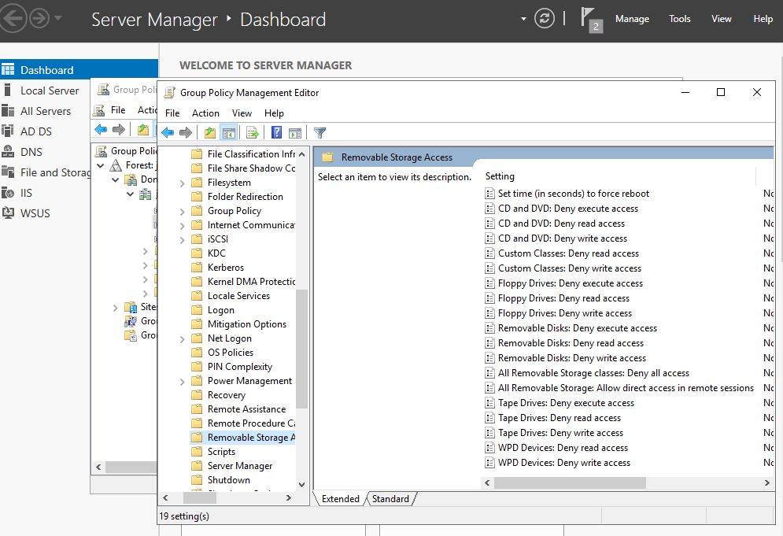
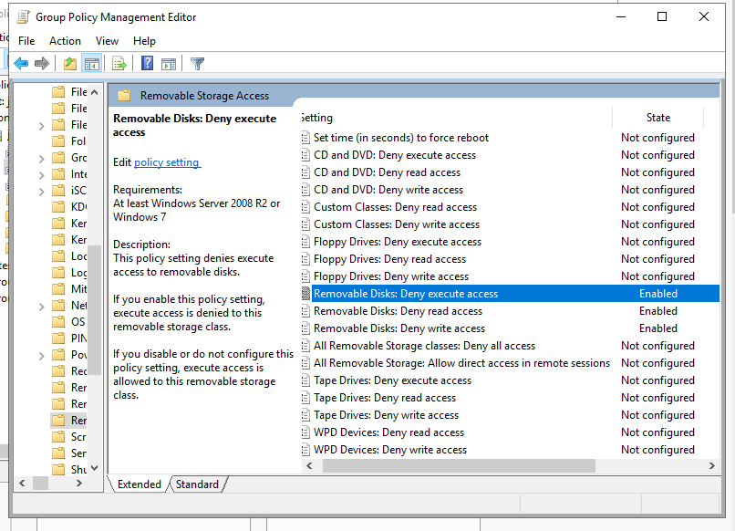
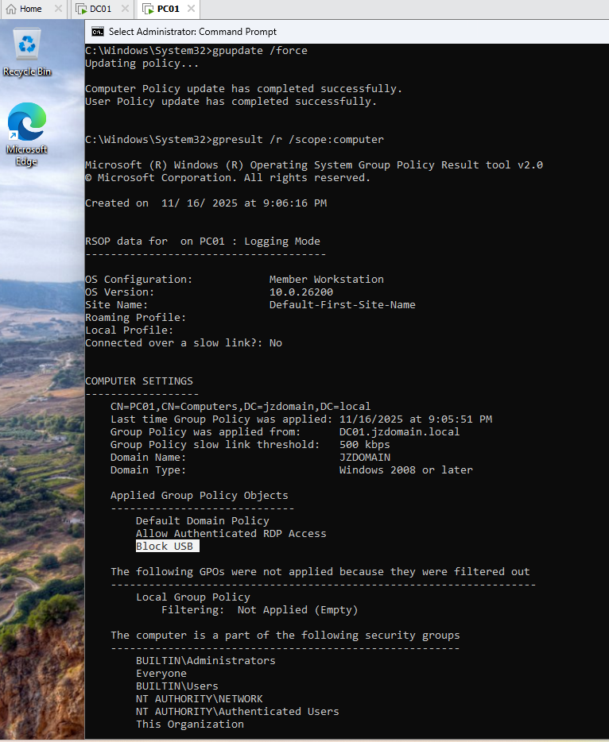

This project shows how I created a Group Policy Object (GPO) to block USB storage devices on domain-joined systems. USB storage is one of the most common ways malware enters a network and also poses a significant risk of data loss and theft.
USB devices are a major entry point for malware and a common method for unauthorized data transfer. Blocking USB storage helps protect sensitive data and reduces attack vectors inside a Windows domain environment.
I used the Computer Configuration path because blocking USB storage must apply to the machine itself not just the user. This ensures consistent enforcement across all user accounts.

I enabled the following Removable Storage Access restrictions:
These block USB flash drives, external storage, and other removable devices from being used.

On the client system, I forced a policy update:
gpupdate /force
Then I verified the GPO was applied successfully using:
gpresult /r

This GPO protects the domain environment by blocking unauthorized USB storage usage. It reduces malware risk and prevents users from copying data onto external devices.